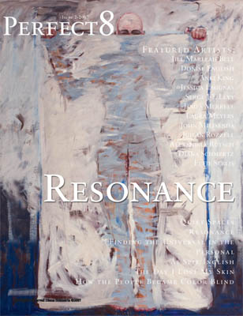

-
Ides of March at ABC No Rio
by Daniel Pearce April 2, 2010
The first artwork one likely sees upon arriving at ABC No Rio’s Ides of March biennial exhibition (through April 9th) is Olek’s Crocheted Windows. The front-facing windows of the second, third, and fourth floors have been covered with what look like camouflage Afghans, colorful knit rectangles whose textiles vary according to the level of the building. While certainly vibrant, Olek’s windows, in their sheathing of ABC’s interior, evoke the wood panels installed in a condemned tenement. The effect is uncanny, and it addresses the uniqueness of its venue, which was made possible by such a condemnation.
ABC No Rio was born of “a short-term occupation of vacant city-managed property” located on Delancey, just three blocks from ABC’s current location. (The above language is taken from the manifesto that accompanied the 1979 “occupation.”) “Occupation,” however, denotes a violence entirely absent from the Real Estate Show*, the watershed exhibition of what would later become the performance space, arts center, and activist hub that is now ABC No Rio. The founding artists’ politics was anything if not vivid. It combined the breadth of basic anarchism with the provincial specificity of community organizing; it occasionally gave way to soaring abstractions, though it was acutely aware of its surroundings. And while the Real Estate Show’s manifesto does brim with a certain type of optimism, it expresses a profound cynicism regarding the living and art-making that can occur within institutional frameworks. It is acerbic in its takedown of New York’s real estate market, with its tendency to displace established populations when whiter, more affluent ones come along; of New York’s housing policy, which prefers to let vacant buildings languish rather than permit non-transactional habitation (a poster for the show reads, “A BUILDING IS NOT A PRECIOUS GEM TO BE LOCKED-BOARDED-HOARDED”); and of the art market, faulted here not only for its complicity in the revaluation of whole neighborhoods, but also for its demand that artists create market-oriented work.
A condemned building, converted into a gallery where artwork would be shown but not sold, would seem the perfect interstitial site for airing the group’s concerns. 123 Delancey then proved an almost platonic answer to the question, “What room for politicized creativity exists after all problematic economies have been avoided?” Thirty years after the fact, it is thrilling to imagine that a building’s exclusion from every marketplace could become the very premise for so much new artwork. With ABC’s vacant-to-flamboyant genesis in mind, it is no wonder that Olek’s obstructed windows are inviting rather than prohibitive. (And, from the inside, the crocheted patterns do wonderful things with the light on a sunny day.)
The city of New York agreed, somewhat recently, to sell ABC its building on Rivington Street for one dollar, on the condition that hundreds of thousands be raised for necessary structural renovations. It is now securely, legally there, hundreds of sweaty shows later! Does its newfound status as a sanctioned space complicate its relationship to squatters, artists, musicians, the dispossessed? I think the question is an absolutely stupid one, but I was expecting to see more substantial, agitprop-y art in the current biennial. There is dispiritingly little engagement with the set of social problems that inspired ABC No Rio’s existence in the first place. Many of these topics beg to be taken up newly, among them: squatting’s national renaissance, induced by foreclosure-glut; the compromised position of the working artist; Bloomberg, generally, given the iconoclastic, dare I say “iconocidal.” history of the Ides of March itself.
Because of these omissions, I found myself uncharacteristically drawn to the most explicit, instrumental works in the show. In the setting of another gallery, Vandana Jain’s screen-printed, multi-colored prayer flags might have seemed ham-fisted, but here they feel pressing, with their spirals of sloganeering text reading, among other snappy things, “PUT PEOPLE BEFORE PROFIT,” “HEALTHCARE NOT WEALTHCARE,” “WE NEED A PUBLIC OPTION,” and “PREGNANCY IS NOT A PREEXISTING CONDITION.”
An installation by Perfect Eight falls into this explicit, instrumental camp as well. A “publication dedicated to the de-objectification of people,” Perfect Eight collates top-selling men’s and women’s magazines—women buy O, Brides, and Good Housekeeping, while men buy Sports Illustrated, Maxim, Playboy, and Stuff—and, next to a newsstand-style diagram of these magazines, offers another “newsstand” of imaginary unisex magazines, all hailing from some utopian parallel universe. The covers of these magazines feature the work of various painters and illustrators, and their titles run the narrow gamut of really good virtues: Intelligence, Loyalty, Courage, and Intimacy. However naïve this revision of general interest, there seems something brave, not quite foolhardy, about using pulpy magazines to evince our better natures.
One of the reasons I fell for such topical works is that many of the pieces presenting themselves as radical turn out, upon further investigation, to be merely husks. Such art in this show feels born of a politically supercharged sensibility, at once eager to express itself in earnest but convinced that art prizes coding and ambiguity above all else. Work like Chanika Svetvilas’s stuffed kitchen gloves, which are covered in fake-blood, limp, accusatorily pointing, is not ambiguous—the referent just isn’t mentioned.** The work declares violence, but the violence isn’t felt because there is no target, no victim. As a result, it feels like an empty polemic. A sculptural installation by Fabian Berenbaum simulates an interior wall being torn open and held there with surgical hooks; a bloody heart is exposed. Is it a commentary on the building’s abundant living history? Or does it insist that if you look penetratingly enough at any space you will find grotesque inscriptions of violence? Or does it simply look good and visceral?
Other works fall prey to a similar vagueness but are somehow more appealing. Michael de Pasquale’s photos, which depict smashed objects against a white background, are satisfyingly, senselessly destructive. They court the “bad” impulses. Carol Warner, represented in the garden, has painted white blocks of text that cover old graffiti, and the blocks read, on the northern wall, “Pre War and Pretty,” and, on the eastern wall, “Beautiful Inside & Out” and “Create a Dream Space.” The text is sunshiny dreck, but it is forgiven by how beautifully it laminates these walls—years-worth of accumulated spraypaint, tidily supplanted by legible sentiments. They are very interesting palimpsests, and I loved looking at them.
Nanna Debois-Buhl’s short documentary Other Halves (from 2007) is one of the only pieces that essentially belong to ABC No Rio’s neighborhood, though it was not made specifically for the biennial. The title is a reference to Jacob Riis’s iconic collection of photographs, How the Other Half Lives, which documents the destitute as they reside in Manhattan’s slums. A Danish immigrant like Riis, Debois-Buhl boasts a deep and thorny affinity for the photographer. Other Halves consists mostly of black and white stills (an homage to Riis) that revisit the locales photographed and made recognizable by Riis, once marginalized sites of extreme impoverishment. The early passages of the film refract images of Canal Street vendors through fresh eyes, recasting commonplace sights as novel ones. Her film proceeds to take the viewer on a tour of what she would ostensibly like us to think of as “Riis territory,” most of which has been gentrified, its once-dangerous public spaces turned into thriving parks. At one point in the film, Debois-Buhl’s tour guide points out an illegal sweatshop where “I [heart] NY” T-shirts are fabricated. Debois-Buhl duly captures the window, but that is all. It becomes clear that the filmmaker’s position is not analogous to Riis’s, as the “other half” is inaccessible to her, nor does she aspire to document it.
None of the buildings in the area are now visibly vacant, nor do they obviously accommodate the demonstrable, spectacular poverty that Riis witnessed. Because of these changes in the neighborhood, it makes sense that Debois-Buhl would take up Riis’s torch by focusing on the concealment of the “other half.” Still, the “neighborhood,” now meant very globally, holds a wealth of things rife for exploration in that vigorous, 1979 mode—one just has to look harder.
–
* If the rhetoric appears lofty, the action was polite. A note from the artists captures the understated civility of the “occupation”: “On December 30, 1979, several artists entered the 1916[-]built factory showroom at 123 Delancey Street. They glass-waxed the windows and began clearing trash from the room. A plumbing line in the basement had burst during the frost of the previous week; this was repaired. The heater was turned on and a radio plugged in. Throughout the day and into the night, artists arrived with their work for the Real Estate Show…. At 9 in the evening, the last artists in the building locked up and went home.”
** This may not fall entirely upon the artist: almost no titles or statements of intent are given, and thus there is virtually no narrative thrust to be found anywhere.

{kind=link}
{kind=link}
{kind=link}